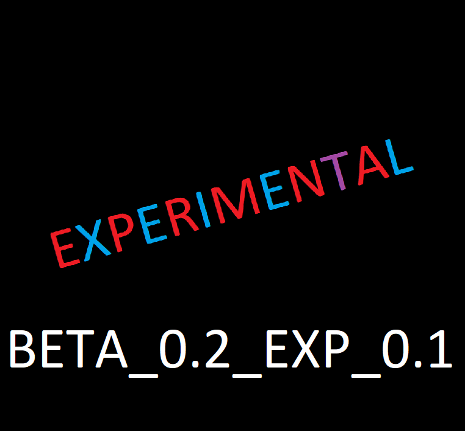
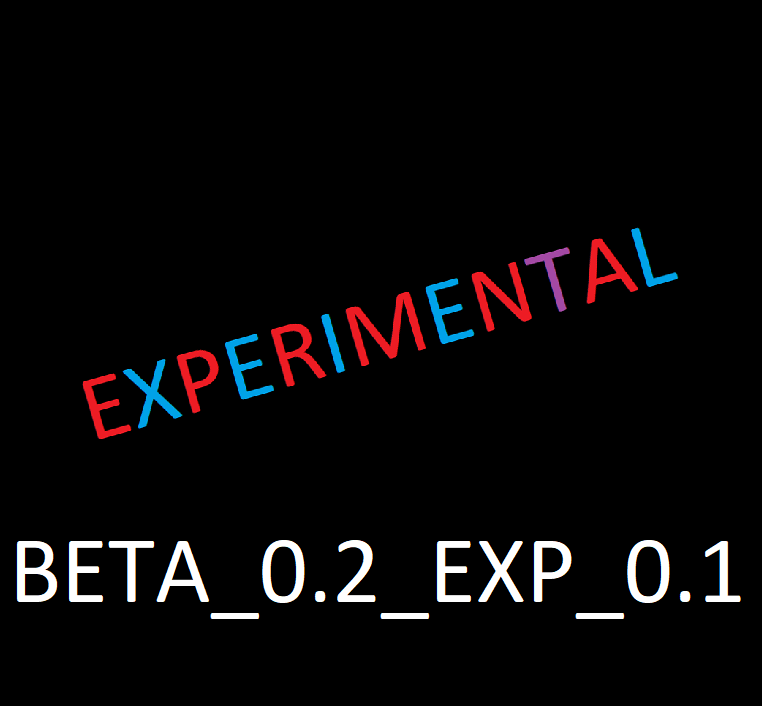

Did you read the Terms and Conditions?
Experimental means that the experminental versions of my game, TicTacToe, is a little tested, it's more stable than canary builds and it has more features than canary. Tho, don't trust too much the experimental versions. Canary versions can't go to full version without being first a experimental version. That does not mean that an experimental version of my TicTacToe was/is a canary build.

Experimental means that the experminental versions of my game, TicTacToe, is a little tested, it's more stable than canary builds and it has more features than canary. Tho, don't trust too much the experimental versions. Canary versions can't go to full version without being first a experimental version. That does not mean that an experimental version of my TicTacToe was/is a canary build.
